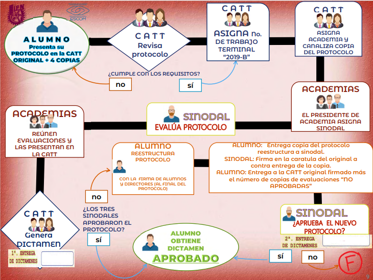

¿En que consisite el protocolo?
El Protocolo de Trabajo Terminal (TT) debe comunicar el objetivo del proyecto, su justificación y alcances. También debe ayudar a designar a los sinodales más adecuados para el TT. Debe redactarse de manera que facilite a los sinodales su evaluación y, eventualmente, servir de guía en la evaluación de TT1 y TT2. También debe ayudar a cualquier lector a comprender claramente la propuesta, su importancia y aplicación. El resumen tendrá como máximo 100 palabras. En esta sección deben definirse las abreviaturas y acrónimos utilizados en el texto.
El proceso del protocolo consta de varias partes:
- Formato del Protocolo
- Recepción de protocolos
- Asignaciones
- Evaluacion del sinodal y Certificación
Primero se debe llevar a cabo un formato (el cual te propocionamos aqui abajo) y debe mantener la estructura planteada

Es el momento de presentar tu protocolo a la CATT para que posteriormente ellos lo revisen
Si el CATT determina que cumple con los requisitos entonces te asignan No. de trabajo terminal y academia, esta última asigna un sinodal
Por último el sinodal evalua el protocolo, si es aprobada entonces las academias reúnen evaluaciones, las presenta al CATT y se genera un dictamen

A continuación se muestra un resumen de estos pasos:
